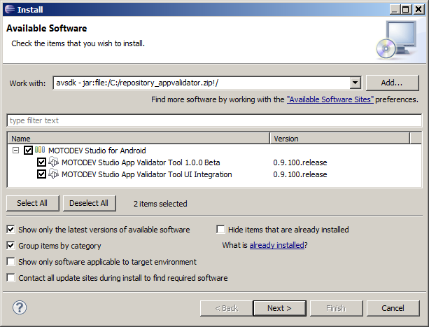

NOTE: This blog post was originally hosted on Motorola's MOTODEV web site. That site was decommissioned in 2012. I've made every attempt to preserve blog posts and accompanying forum posts with their original content. Many web links are no longer valid, so they have been removed and replaced with emphasized text.
by Eric Cloninger (EricC)
Hello everyone,
App quality is the result of many diligent practices, one of which is testing. I hope our users have taken advantage of the MOTODEV App Validator. If not, I understand. Perhaps we've made it difficult to see, use, or understand. We're working to fix that and you will see improvements to usability in the future as well as training on how to use the tool inside MOTODEV Studio and on the command line.
The App Validator is more than just a testing tool, though. When we first created it, we knew that Android would be rapidly evolving the way it is now and we knew there would be many new conditions that would arise that needed to be detected. When new OS releases appear, we can write new checkers for the App Validator in about three days because the checkers use the same underlying technology that Eclipse plugins use.
Today, I'm pleased to announce the App Validator Beta SDK . With Eclipse Classic , the Android Development Tools (ADT), and this SDK, you can write your own extensions to the MOTODEV App Validator to check Android applications. The App Validator framework provides the ability to decompose the Android app, enumerate resources, pull apart the app manifest, decompile Java code, and publish reports. Your plugin provides the specific business logic to detect the condition and raises exceptions. The framework handles the rest.
The App Validator runs as a command line tool as well as embedded into the IDE, so an extension built with this SDK will run in both environments. I suspect that most developers who create extensions will insert the tool into their build scripts as a last check before shipping, but I would love to see innovative and crazy things done that I didn't think of.
These are just some of the things you might do with the App Validator SDK:
The skills needed to use this SDK are not only Java, but also Eclipse plugin development. The learning curve for Eclipse, just like any robust API set, is rather steep. The good news is that finding skilled Eclipse developers isn't terribly difficult. The installation guide, Javadocs, and the install .jar file are all available at the MOTODEV Tools and Libraries site . There are two sample plugins that are installed with the the .jar file that you can use to start your own development. The installation experience is typical for Eclipse users and is explained in detail in the install guide .

The SDK is in beta form. We intend to spend some time taking feedback on our discussion boards , so if you use it, please let us know what we can improve in terms of the APIs, the API documentation, the user documentation, and the overall user experience.
Thanks again for using MOTODEV and good luck with your development!
Eric